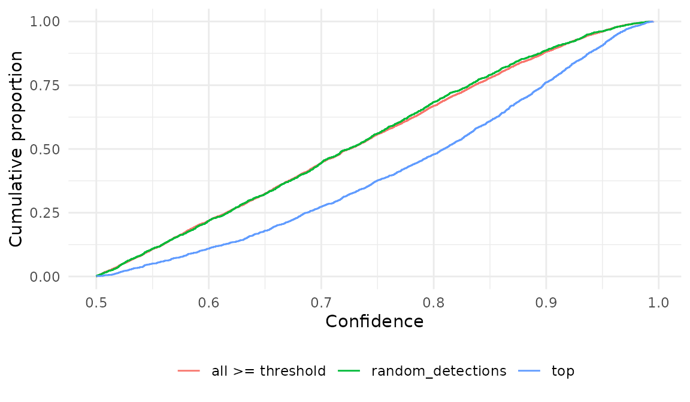

Tradução. Este artigo é uma tradução da versão em inglês, que é a referência: Choosing a sampling design. Traduzido da versão 3.2.1 do pacote; se as duas divergirem, vale a versão em inglês.
select_clips() oferece três desenhos amostrais,
definidos por sampling_mode. Eles respondem a perguntas
diferentes, e uma amostra de validação obtida para um propósito em geral
não é válida para outro. Este artigo descreve a finalidade de cada
desenho, aplica os três aos dados de exemplo distribuídos com o pacote e
compara os clipes que cada um seleciona.
sampling_mode |
unidade sorteada | seleção | uso |
|---|---|---|---|
"top" |
predição | maior confiança por estrato | retreinamento do classificador; calibração score-probabilidade |
"random_detections" |
ocasião com detecção | aleatória, dentro de estratos independentes do score | taxas de falsos positivos, desenho de confirmação de observações |
"random_recordings" |
gravação ou minuto | aleatória, entre todas as gravações | taxas de falsos positivos e falsos negativos, desenho de múltiplos métodos |
Dados de exemplo
O exemplo consiste em tabelas de seleção simuladas do BirdNET
(formato Raven) de vocalizações de anuros em vários locais ao longo de
seis meses (outubro de 2021 a março de 2022), além da lista de todas as
gravações realizadas (recordings.csv), inclusive as que não
têm nenhuma predição. Os arquivos de áudio não existem:
Begin Path aponta para uma unidade de rede fictícia. Como
select_clips() nunca lê o áudio, isso não impede nenhuma
das etapas abaixo.
library(sheepdog)
suppressPackageStartupMessages(library(dplyr))
ex <- system.file("extdata", "example", package = "sheepdog")
pred <- suppressMessages(read_selection_tables(file.path(ex, "birdnet")))
recs <- readr::read_csv(file.path(ex, "recordings.csv"),
show_col_types = FALSE)
count(pred, site)
#> # A tibble: 4 × 2
#> site n
#> <chr> <int>
#> 1 ARA 1753
#> 2 BAI 1427
#> 3 NHE 2507
#> 4 XAR 1866Há 7553 predições de 8 espécies em 4 locais, provenientes de 354 gravações de 300 s. O esforço de gravação difere entre os locais:
count(recs, site, name = "recordings")
#> # A tibble: 4 × 2
#> site recordings
#> <chr> <int>
#> 1 ARA 90
#> 2 BAI 90
#> 3 NHE 90
#> 4 XAR 84Ao longo de todo o artigo, assume-se que a análise de ocupação trata como detecção uma predição com confiança 0,5:
"top": os maiores scores
"top" mantém as n_top predições de maior
confiança em cada estrato local × espécie × noite × hora. As predições
abaixo de min_confidence são descartadas antes.
top <- select_clips(pred, sampling_mode = "top", n_top = 1,
min_confidence = threshold)
#> Sampling mode: top (occasion = file).
#> 2815 predictions dropped by the filter confidence < 0.5.
#> 1876 clips selected (top 1 per site x species x night x hour) of 8 species.Este desenho é adequado a dois propósitos. Primeiro, o retreinamento
do classificador, para o qual exemplos confirmados de score alto de cada
espécie são os acréscimos mais úteis ao conjunto de treinamento.
Segundo, a calibração score-probabilidade de calibrate(): o
modelo de calibração descreve a probabilidade de uma predição estar
correta condicionada ao seu score, de modo que selecionar
clipes pelo score não o enviesa, desde que os clipes selecionados cubram
a faixa de scores de interesse.
"top" não é uma amostra probabilística, e
inclusion_prob é NA. Ele não deve ser usado
para estimar taxas de falsos positivos para modelos de ocupação. Clipes
com os maiores scores contêm menos falsos positivos do que uma amostra
aleatória de detecções, de modo que a proporção de negativos entre eles
subestima a taxa de falsos positivos das detecções que entram no
histórico de detecção.
"random_detections": desenho de confirmação de
observações
No desenho de confirmação de observações (Chambert et al. 2015), um
subconjunto aleatório das ocasiões com detecção é verificado, e cada
detecção de uma ocasião verificada é confirmada ou rejeitada.
"random_detections" o implementa da seguinte forma:
- Uma ocasião candidata é uma ocasião com pelo menos uma predição da
espécie com confiança
threshold. A ocasião é a unidade amostral do modelo de ocupação, definida poroccasion_unit: a gravação inteira ("file") ou um minuto dela ("minute"). -
n_topocasiões candidatas são sorteadas aleatoriamente em cada estrato local × espécie × noite × hora. Os estratos não dependem do score, de modo que cada detecção tem uma probabilidade conhecida e não nula de ser verificada. - Cada predição
thresholdde uma ocasião sorteada torna-se um clipe.
threshold é obrigatório e deve ser igual ao limiar da
análise de ocupação; caso contrário, as ocasiões sorteadas não são as
ocasiões registradas como detecções no modelo.
Com occasion_unit = "file":
rd_file <- select_clips(pred, sampling_mode = "random_detections",
occasion_unit = "file", threshold = threshold,
n_top = 1)
#> Sampling mode: random_detections (occasion = file).
#> 1876 occasions drawn (1 per site x species_code x night x recording_hour) among 1876 with a prediction >= 0.5.
#> 4738 clips (every prediction >= 0.5 of the 1876 occasions drawn).
table(rd_file$inclusion_prob)
#>
#> 1
#> 4738
files_per_stratum <- recs |>
mutate(stamp = sub(".*_(\\d{8})_(\\d{2}).*", "\\1_\\2", source_audio)) |>
count(site, stamp)
max(files_per_stratum$n)
#> [1] 1Nos dados de exemplo, cada combinação local × noite × hora contém no
máximo 1 gravação, de modo que cada estrato contém no máximo um arquivo
candidato e o sorteio de primeiro estágio mantém todos eles
(inclusion_prob = 1). O mesmo vale para qualquer cronograma
de gravação com um arquivo por hora. A subamostragem exige, então, um
estrato mais grosseiro, ocasiões de um minuto ou os limites descritos em
Limitando o esforço.
O argumento strata define o estrato do sorteio:
"night_hour" (o padrão), "night" ou
"site_species". Com strata = "night", os
arquivos de uma noite competem entre si, e um é sorteado por local ×
espécie × noite:
rd_night <- select_clips(pred, sampling_mode = "random_detections",
occasion_unit = "file", threshold = threshold,
n_top = 1, strata = "night")
#> Sampling mode: random_detections (occasion = file).
#> 1343 occasions drawn (1 per site x species_code x night) among 1876 with a prediction >= 0.5.
#> 3339 clips (every prediction >= 0.5 of the 1343 occasions drawn).
summary(rd_night$inclusion_prob)
#> Min. 1st Qu. Median Mean 3rd Qu. Max.
#> 0.5000 0.5000 1.0000 0.7929 1.0000 1.0000Além de "night_hour", "night" e
"site_species", as predefinições "hour"
(agrupando as noites), "week" e "month"
distribuem o sorteio ao longo do ciclo diário ou da estação. Com
strata = "month", os arquivos de um mês competem entre
si:
rd_month <- select_clips(pred, sampling_mode = "random_detections",
occasion_unit = "file", threshold = threshold,
n_top = 2, strata = "month")
#> Sampling mode: random_detections (occasion = file).
#> 332 occasions drawn (2 per site x species_code x month) among 1876 with a prediction >= 0.5.
#> 780 clips (every prediction >= 0.5 of the 332 occasions drawn).
summary(rd_month$inclusion_prob)
#> Min. 1st Qu. Median Mean 3rd Qu. Max.
#> 0.1333 0.1429 0.1429 0.2028 0.1667 1.0000strata também aceita um vetor de nomes de colunas, para
estratos definidos pelo usuário. Qualquer coluna adicionada às predições
antes da chamada pode ser usada. Como local e espécie sempre fazem parte
dos estratos, uma coluna útil varia dentro de um local: a chuva da
noite, um gravador quando um local tem vários ou, como aqui, a fase da
lua, aproximada a partir da data da noite (dias desde uma lua nova de
referência, módulo o mês sinódico de 29,53 dias) e cruzada com o
mês.
moon_phase <- function(night) {
days <- as.numeric(as.Date(night, "%Y%m%d") - as.Date("2000-01-06"))
cut(days %% 29.530588, breaks = c(0, 7.38, 14.77, 22.15, 29.54),
labels = c("new", "first_quarter", "full", "last_quarter"),
include.lowest = TRUE)
}
# the date (YYYYMMDD) comes from the name of the recording
rd_moon <- pred |>
mutate(date = regmatches(begin_path, regexpr("\\d{8}(?=_\\d{6})",
begin_path, perl = TRUE)),
moon = as.character(moon_phase(date))) |>
select_clips(sampling_mode = "random_detections", occasion_unit = "file",
threshold = threshold, n_top = 1,
strata = c("month", "moon"))
#> Sampling mode: random_detections (occasion = file).
#> 581 occasions drawn (1 per site x species_code x month x moon) among 1876 with a prediction >= 0.5.
#> 1419 clips (every prediction >= 0.5 of the 581 occasions drawn).
rd_moon |>
distinct(site, species_code, occasion_id) |>
nrow()
#> [1] 581site e species_code sempre fazem parte dos
estratos, para que inclusion_prob permaneça exata quando
target_total ou max_per_species sorteiam
novamente dentro de local × espécie. Os estratos não podem depender do
score: select_clips() recusa confidence e
rank, e toda coluna de estrato deve ser constante dentro de
uma ocasião. Qualquer estrato que atenda a essas condições é compatível
com o desenho de confirmação de observações.
Com occasion_unit = "minute", um estrato contém até
cinco minutos candidatos por gravação, e um deles é sorteado:
rd <- select_clips(pred, sampling_mode = "random_detections",
occasion_unit = "minute", threshold = threshold,
n_top = 1)
#> Sampling mode: random_detections (occasion = minute).
#> 1876 occasions drawn (1 per site x species_code x night x recording_hour) among 3824 with a prediction >= 0.5.
#> 2288 clips (every prediction >= 0.5 of the 1876 occasions drawn).occasion_id identifica a ocasião,
n_detections_occasion conta as predições
threshold da espécie nela, e inclusion_prob é
a probabilidade de a ocasião ter sido sorteada:
rd |>
select(site, species_code, occasion_id, rank, confidence,
n_detections_occasion, inclusion_prob) |>
head(4)
#> # A tibble: 4 × 7
#> site species_code occasion_id rank confidence n_detections_occasion
#> <chr> <chr> <chr> <int> <dbl> <int>
#> 1 ARA Boana raniceps_boa-r… ARA01_2021… 1 0.504 1
#> 2 ARA Boana raniceps_boa-r… ARA01_2021… 1 0.586 1
#> 3 ARA Boana raniceps_boa-r… ARA01_2021… 1 0.924 2
#> 4 ARA Boana raniceps_boa-r… ARA01_2021… 2 0.796 2
#> # ℹ 1 more variable: inclusion_prob <dbl>
count(rd, inclusion_prob)
#> # A tibble: 5 × 2
#> inclusion_prob n
#> <dbl> <int>
#> 1 0.2 36
#> 2 0.25 176
#> 3 0.333 502
#> 4 0.5 764
#> 5 1 810inclusion_prob é
,
em que
é o número de ocasiões candidatas no estrato. Como toda detecção de uma
ocasião sorteada é recortada, o número de clipes por ocasião é igual a
n_detections_occasion:
per_occasion <- count(rd, site, species_code, occasion_id,
n_detections_occasion, name = "n_clips")
all(per_occasion$n_clips == per_occasion$n_detections_occasion)
#> [1] TRUEVale repetir essa verificação na tabela de validação antes de passá-la a um modelo de ocupação: um clipe ausente de uma ocasião viola o pressuposto de que todas as suas detecções foram confirmadas.
"random_recordings": desenho de múltiplos métodos
No desenho de múltiplos métodos (Miller et al. 2011), um segundo
método, sem ambiguidade (aqui, a anotação auditiva de gravações
inteiras), é aplicado a um subconjunto aleatório das unidades amostrais,
independentemente de o classificador ter detectado algo. Isso fornece
informação tanto sobre falsos negativos quanto sobre falsos positivos.
"random_recordings" sorteia gravações (ou minutos, com
occasion_unit = "minute") entre todas as realizadas, com ou
sem predições, proporcionalmente ao esforço em cada local:
recording_fraction das gravações de cada local, ou um
número fixo n_recordings_per_site.
O sorteio requer a lista de todas as gravações. Por padrão, ela é
obtida listando as pastas de áudio que aparecem em
Begin Path, o que omite pastas sem nenhuma predição e falha
aqui porque os arquivos de áudio não existem. O argumento
recordings fornece a lista em seu lugar:
rr <- select_clips(pred, sampling_mode = "random_recordings",
recordings = file.path(ex, "recordings.csv"),
recording_fraction = 0.1, recording_duration = 300,
species = "boa-ran")
#> Sampling mode: random_recordings (occasion = file).
#> 354 recordings listed at 4 site(s).
#> Filter of 1 species: 7553 -> 874 predictions.
#> 35 file(s) drawn among 354 recorded, to annotate 1 species.
rr |>
select(site, species_code, clip_file, clip_start, clip_end,
confidence, inclusion_prob) |>
head(3)
#> # A tibble: 3 × 7
#> site species_code clip_file clip_start clip_end confidence inclusion_prob
#> <chr> <chr> <chr> <dbl> <dbl> <dbl> <dbl>
#> 1 ARA Boana raniceps_… rec_ARA_… 0 300 NA 0.1
#> 2 ARA Boana raniceps_… rec_ARA_… 0 300 NA 0.1
#> 3 ARA Boana raniceps_… rec_ARA_… 0 300 NA 0.1
count(rr, site)
#> # A tibble: 4 × 2
#> site n
#> <chr> <int>
#> 1 ARA 9
#> 2 BAI 9
#> 3 NHE 9
#> 4 XAR 8O número sorteado por local acompanha seu esforço de gravação: com
recording_fraction = 0.1, o local com menos gravações (XAR,
84) contribui com 8 gravações, e inclusion_prob é a fração
sorteada naquele local. O padrão recording_fraction = 0.01
é adequado a projetos grandes: com menos de 150 gravações por local, ele
sorteia uma única gravação por local, de modo que projetos pequenos
devem aumentá-lo ou definir n_recordings_per_site.
Cada clipe é uma gravação inteira (ou um minuto);
confidence é NA e rank é
NA. recording_duration define
clip_end; sem ele, clip_end é NA
para gravações inteiras, e ocasiões de um minuto exigem a leitura dos
arquivos com o pacote ‘av’. A gravação é copiada uma vez para cada
espécie a anotar, de modo que cada cópia receba um veredito para uma
espécie, na pasta dessa espécie. Sem species, todas as
espécies com predições são incluídas, o que multiplica o esforço de
escuta pelo número de espécies:
rr_all <- suppressMessages(
select_clips(pred, sampling_mode = "random_recordings",
recordings = file.path(ex, "recordings.csv"),
recording_fraction = 0.1, recording_duration = 300)
)
c(recordings = n_distinct(rr_all$occasion_id), clips = nrow(rr_all))
#> recordings clips
#> 35 280Restrinja species às espécies que de fato serão
anotadas. As gravações de "random_recordings" não são
confirmações de detecções e são tratadas de forma diferente nas etapas
seguintes (ver vignette("crywolf-integration")).
Comparação dos scores selecionados
A diferença prática entre "top" e
"random_detections" é visível na confiança dos clipes que
cada um seleciona. A referência é a distribuição de todas as predições
threshold, isto é, as detecções que entram no histórico de
detecção. Os clipes de "random_detections" são ponderados
por 1 / inclusion_prob (pesos do desenho), porque ocasiões
em estratos com muitas candidatas têm menor probabilidade de serem
sorteadas.
wquantile <- function(x, w = rep(1, length(x)),
probs = c(0.1, 0.25, 0.5, 0.75, 0.9)) {
o <- order(x)
cw <- cumsum(w[o]) / sum(w)
setNames(x[o][vapply(probs, \(p) which(cw >= p)[1], integer(1))],
paste0(probs * 100, "%"))
}
score_quantiles <- rbind(
`all >= threshold` = wquantile(above$confidence),
random_detections = wquantile(rd$confidence, 1 / rd$inclusion_prob),
top = wquantile(top$confidence)
)
round(score_quantiles, 3)
#> 10% 25% 50% 75% 90%
#> all >= threshold 0.547 0.616 0.725 0.836 0.912
#> random_detections 0.545 0.617 0.725 0.831 0.907
#> top 0.592 0.687 0.809 0.897 0.948Os quantis ponderados de "random_detections" acompanham
os de todas as detecções (mediana 0.72 contra 0.72), ao passo que
"top" é deslocado para cima (mediana 0.81). Na medida em
que falsos positivos recebem scores mais baixos do que detecções
verdadeiras, como ocorre em média nos dados simulados (embora as duas
distribuições se sobreponham), uma taxa de falsos positivos estimada a
partir dos clipes de "top" é enviesada para baixo.
library(ggplot2)
wecdf <- function(x, w, design) {
o <- order(x)
tibble(confidence = x[o], ecdf = cumsum(w[o]) / sum(w), design = design)
}
curves <- bind_rows(
wecdf(above$confidence, rep(1, nrow(above)), "all >= threshold"),
wecdf(rd$confidence, 1 / rd$inclusion_prob, "random_detections"),
wecdf(top$confidence, rep(1, nrow(top)), "top")
)
ggplot(curves, aes(confidence, ecdf, colour = design)) +
geom_step() +
labs(x = "Confidence", y = "Cumulative proportion", colour = NULL) +
theme_minimal() +
theme(legend.position = "bottom")
Limitando o esforço
target_total, max_per_species e
balance_by_hour limitam o número de unidades a revisar após
o sorteio estratificado. Seu efeito difere entre os desenhos:
-
target_totaldefine o total por local, dividido igualmente entre as espécies por water filling (espécies com menos unidades do que sua cota entram inteiras, e o excedente vai para as demais). Em"top"ele conta clipes; em"random_detections"conta ocasiões, cada uma das quais pode gerar vários clipes. -
max_per_speciesdefine um limite fixo por local × espécie. É ignorado quandotarget_totalé definido. -
balance_by_hour = TRUEsorteia em rodízio (round-robin) entre as horas do dia dentro de cada espécie, de modo que a amostra revisada cubra o ciclo diário. - Em
"random_recordings"o esforço é definido porrecording_fractionoun_recordings_per_site;target_totalemax_per_speciessão ignorados com um aviso.
target <- 40
top_cap <- select_clips(pred, sampling_mode = "top", n_top = 1,
min_confidence = threshold, target_total = target)
#> Sampling mode: top (occasion = file).
#> 2815 predictions dropped by the filter confidence < 0.5.
#> 1876 clips selected (top 1 per site x species x night x hour) of 8 species.
#> Target of 40 clips per site (balanced by species and hour): 1876 -> 160 clips.
rd_cap <- select_clips(pred, sampling_mode = "random_detections",
occasion_unit = "minute", threshold = threshold,
n_top = 1, target_total = target)
#> Sampling mode: random_detections (occasion = minute).
#> 1876 occasions drawn (1 per site x species_code x night x recording_hour) among 3824 with a prediction >= 0.5.
#> Target of 40 occasions per site (balanced by species and hour): 1876 -> 160 occasions.
#> 191 clips (every prediction >= 0.5 of the 160 occasions drawn).
rd_cap |>
distinct(site, species_code, occasion_id) |>
count(site, name = "occasions") |>
left_join(count(rd_cap, site, name = "clips"), by = "site") |>
left_join(count(top_cap, site, name = "top_clips"), by = "site")
#> # A tibble: 4 × 4
#> site occasions clips top_clips
#> <chr> <int> <int> <int>
#> 1 ARA 40 49 40
#> 2 BAI 40 47 40
#> 3 NHE 40 50 40
#> 4 XAR 40 45 40A mesma meta de 40 unidades por local resulta em 160 clipes em
"top", mas em 191 clipes em
"random_detections" (4 locais), porque toda detecção de uma
ocasião sorteada precisa ser revisada. Planeje a meta em ocasiões e
espere um número maior de clipes.
O sorteio de segundo estágio entra em inclusion_prob,
que é o produto da probabilidade de primeiro estágio pela fração de
ocasiões candidatas mantidas no estrato (local × espécie, e hora quando
balance_by_hour = TRUE):
summary(rd_cap$inclusion_prob)
#> Min. 1st Qu. Median Mean 3rd Qu. Max.
#> 0.009615 0.029040 0.047619 0.080117 0.076923 1.000000Como a meta é dividida igualmente entre as espécies, espécies raras
têm probabilidades de inclusão maiores do que as comuns: o conjunto não
ponderado de clipes as sobrerrepresenta, e estimativas agrupadas entre
espécies devem ponderar os clipes por
1 / inclusion_prob.
Em "random_recordings" o limite não é aplicado:
tryCatch(
select_clips(pred, sampling_mode = "random_recordings",
recordings = file.path(ex, "recordings.csv"),
recording_duration = 300, target_total = target),
warning = \(w) conditionMessage(w)
)
#> Sampling mode: random_recordings (occasion = file).
#> 354 recordings listed at 4 site(s).
#> 4 file(s) drawn among 354 recorded, to annotate 8 species.
#> [1] "target_total/max_per_species are ignored in \"random_recordings\" (recording_fraction or n_recordings_per_site apply)."Passagem para os modelos de ocupação
O manifesto retornado por select_clips() é recortado com
cut_clips() (ou em uma única etapa com
extract_validation_clips()), revisado e unido aos vereditos
com post_validation(). As colunas lidas pelos modelos de
ocupação com falsos positivos (occasion_id,
n_detections_occasion, inclusion_prob,
verdict), e a forma como os clipes de cada desenho devem
ser usados, estão definidas em
vignette("crywolf-integration").
Referências
Chambert, T., Miller, D. A. W., & Nichols, J. D. (2015). Modeling false positive detections in species occurrence data under different study designs. Ecology, 96, 332–339. https://doi.org/10.1890/14-1507.1
Miller, D. A., Nichols, J. D., McClintock, B. T., Grant, E. H. C., Bailey, L. L., & Weir, L. A. (2011). Improving occupancy estimation when two types of observational error occur: non-detection and species misidentification. Ecology, 92, 1422–1428. https://doi.org/10.1890/10-1396.1